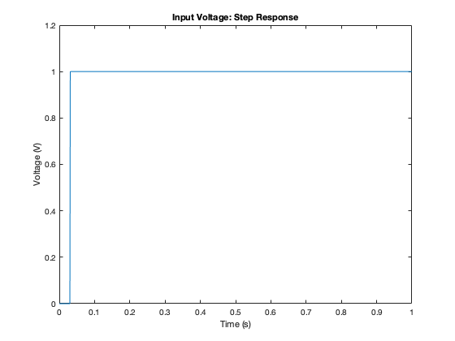

Contents
clear all;
clc;
R1 = 1;
R2 = 2;
R3 = 10;
R4 = 0.1;
RO = 1000;
C1 = 0.25;
L1 = 0.2;
alpha = 100;
Vin=1;
G=zeros(6);
C=zeros(6);
V1
G(1,:)=[1 0 0 0 0 0];
C(1,:)=[0 0 0 0 0 0];
V2
G(2,:)=[(-1/R1) (1/R2+1/R1) 0 0 0 1];
C(2,:)=[-C1 +C1 0 0 0 0];
V3
G(3,:)=[0 0 1/R3 0 0 -1];
C(3,:)=[0 0 0 0 0 0];
V4
G(4,:)=[0 0 -1*alpha/R3 1 0 0];
C(4,:)=[0 0 0 0 0 0];
V5
G(5,:)=[0 0 0 -1/R4 (1/R4+1/RO) 0];
C(5,:)=[0 0 0 0 0 0];
V6
G(6,:)=[0 -1 1 0 0 0];
C(6,:)=[0 0 0 0 0 L1];
Part A step response
timesim=1;
numsteps=1000;
timestep=timesim/numsteps;
A=(C./timestep+G);
V(1:6,1)=[0;0;0;0;0;0];
for step=1:numsteps
t=step*timestep;
if(t>0.03)
Vin=1;
else
Vin=0;
end
F=[Vin; 0; 0; 0; 0; 0];
B=C*V(1:6,step)./timestep+F;
V(1:6,step+1)=A\B;
end
figure(3)
plot(linspace(0,timesim,numsteps+1),V(1,:))
title('Input Voltage: Step Response')
xlabel('Time (s)')
ylabel('Voltage (V)')
figure(4)
plot(linspace(0,timesim,numsteps+1),V(5,:))
title('Output Voltage: Step Response')
xlabel('Time (s)')
ylabel('Voltage (V)')
Yi = fft(V(1,:));
Yo = fft(V(5,:));
figure(5)
plot(linspace(-1/timestep*0.5,1/timestep*0.5,length(Yi)),fftshift(abs(Yi)))
title('Input Frequency Content: Step Response')
xlabel('Frequency (Hz)')
ylabel('Power')
figure(6)
plot(linspace(-1/timestep*0.5,1/timestep*0.5,length(Yo)),fftshift(abs(Yo)))
title('Output Frequency Content: Step Response')
xlabel('Frequency (Hz)')
ylabel('Power')

Part B sin response
timesim=1;
numsteps=1000;
f=1/0.03;
timestep=timesim/numsteps;
A=(C./timestep+G);
clear V
V(1:6,1)=[0;0;0;0;0;0];
for step=1:numsteps
t=step*timestep;
Vin=sin(2*pi*f*t);
F=[Vin; 0; 0; 0; 0; 0];
B=C*V(1:6,step)./timestep+F;
V(1:6,step+1)=A\B;
end
figure(7)
plot(linspace(0,timesim,numsteps+1),V(1,:))
title('Input Voltage: Sin Response')
xlabel('Time (s)')
ylabel('Voltage (V)')
figure(8)
plot(linspace(0,timesim,numsteps+1),V(5,:))
title('Output Voltage: Sin Response')
xlabel('Time (s)')
ylabel('Voltage (V)')
Yi = fft(V(1,:));
Yo = fft(V(5,:));
figure(9)
plot(linspace(-1/timestep*0.5,1/timestep*0.5,length(Yi)),fftshift(abs(Yi)))
title('Input Frequency Content: Sin Response')
xlabel('Frequency (Hz)')
ylabel('Power')
figure(10)
plot(linspace(-1/timestep*0.5,1/timestep*0.5,length(Yo)),fftshift(abs(Yo)))
title('Output Frequency Content: Sin Response')
xlabel('Frequency (Hz)')
ylabel('Power')
Part C Gaussian Pulse
timesim=1;
numsteps=1000;
f=1/0.03;
timestep=timesim/numsteps;
A=(C./timestep+G);
clear V
V(1:6,1)=[0;0;0;0;0;0];
t=linspace(0,timesim,numsteps);
Pulse=@(t) exp(-(t-0.1)^2/(2.*0.03^2));
for step=1:numsteps
t=step*timestep;
Vin=Pulse(t);
F=[Vin; 0; 0; 0; 0; 0];
B=C*V(1:6,step)./timestep+F;
V(1:6,step+1)=A\B;
end
figure(11)
plot(linspace(0,timesim,numsteps+1),V(1,:))
title('Input Voltage: Gaussian Pulse')
xlabel('Time (s)')
ylabel('Voltage (V)')
figure(12)
plot(linspace(0,timesim,numsteps+1),V(5,:))
title('Output Voltage: Gaussian Pulse')
xlabel('Time (s)')
ylabel('Voltage (V)')
Yi = fft(V(1,:));
Yo = fft(V(5,:));
figure(13)
plot(linspace(-1/timestep*0.5,1/timestep*0.5,length(Yi)),fftshift(abs(Yi)))
title('Input Frequency Content: Gaussian Pulse')
xlabel('Frequency (Hz)')
ylabel('Power')
figure(14)
plot(linspace(-1/timestep*0.5,1/timestep*0.5,length(Yo)),fftshift(abs(Yo)))
title('Output Frequency Content: Gaussian Pulse')
xlabel('Frequency (Hz)')
ylabel('Power')